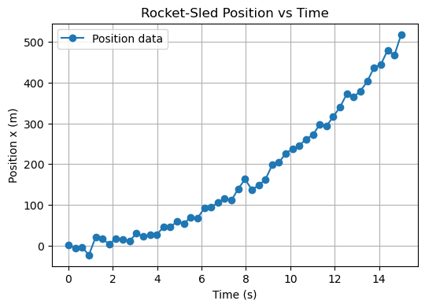
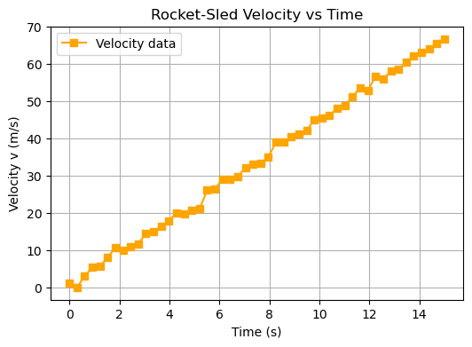
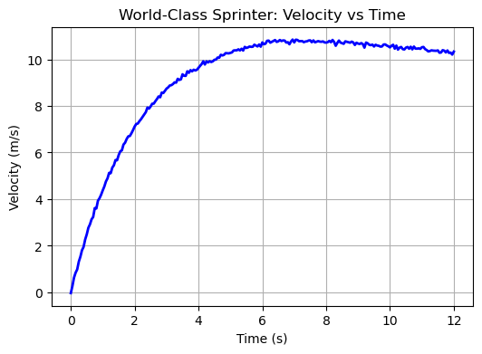
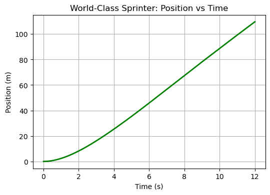

B2.6 Problems#
Problem B2.1 — Unmarked Cruiser vs. Speeding SUV#
An SUV blasts past an unmarked police cruiser at a steady \(v_s = 36.0~\text{m/s}\).
At that instant (\(t=0\)), the cruiser starts from rest and accelerates uniformly at \(a = 3.20~\text{m/s}^2\) to catch up.
How long does it take the cruiser to catch the SUV?
Confirm with a plot showing both \(x(t)\) curves on the same axes and clearly marking the intersection.
Problem B2.2 — The Airliner Takeoff Challenge#
Two passenger jets are on parallel runways, preparing for takeoff.
Both begin rolling at the same time when they are 2.0 km from the end of the runway.
Jet A (the pilot in training) starts with an initial speed of
\(v_0 = 60.0~\text{m/s}\) and increases thrust to achieve a constant acceleration of
\(a = 1.20~\text{m/s}^2\) for 15.0 s, after which it maintains that speed until leaving the runway.
Jet B (an experienced pilot) maintains a constant speed of
\(75.0~\text{m/s}\) for the entire distance.
1. Final velocity at the end of Jet A’s acceleration#
Find the final velocity at the end of the 15.0 s acceleration phase.
2. Time saved by accelerating#
Determine how much time Jet A saves by accelerating for 15.0 s and then continuing at \(v_f\) compared to moving at \(v_0\) the whole way.
3. The other pilot’s performance#
Jet B starts simultaneously from the same position but never accelerates,
traveling at \(v_B = 75.0~\text{m/s}\) the entire 2000 m.
When Jet A reaches the runway end, by how many seconds and meters is Jet B behind (or ahead)?
4. Plot your results#
Plot the following graphs to illustrate your solution:
Velocity vs Time: show Jet A’s acceleration phase, cruise phase, and Jet B’s constant velocity line.
Position vs Time: show how both jets progress toward the 2000 m mark.
Problem B2.3 — Rocket-Sled Acceleration Test#
During a rocket-sled test at a desert proving ground, engineers record the sled’s position and velocity over time.
All measurements are significant to two significant figures.
1. Using the position–time graph#
Estimate the sled’s velocity at \(t = 12\ \text{s}\) by drawing a tangent to the curve or by using nearby data points.
Does your estimated velocity agree with the corresponding value on the velocity–time graph?
2. Using the velocity–time graph#
Determine whether the acceleration is constant, and if so, estimate its value.
Assume it is constant and express your result in \(\text{m/s}^2\).
3. Comparing displacement#
From the velocity–time graph, estimate the sled’s total displacement between \(t=0\) and \(t=15\ \text{s}\) by finding the area under the curve.
Compare this with the total displacement read directly from the position–time graph.
Do the two methods give similar results within the precision of the graphs?


Problem B2.4 — World-Class Sprinter#
A graph of velocity vs. time for a world-class 100-m sprinter is shown.
Assume the curve is smooth and that all measurements are significant to two significant figures.
1. Average velocity for the first 4 s#
Using the position–time information implied by the graph, estimate the sprinter’s average velocity for the first \(4.0~\text{s}\):
2. Instantaneous velocity at \(t = 5~\text{s}\)#
From the velocity–time graph, estimate the instantaneous velocity at \(t = 5.0~\text{s}\), i.e. read off \(v(5.0~\text{s})\).
3. Average acceleration between 0 and 4 s#
From the velocity–time graph, find the average acceleration between \(t = 0\) and \(t = 4.0~\text{s}\):
4. Race time#
Determine the time to complete 100 m.
Use the area under the \(v\)–\(t\) curve (i.e. the integral of \(v(t)\)) to find when the cumulative distance first reaches \(100~\text{m}\):


Problem B2.5 - Motion with Constant Velocity#
A cart moves at nearly constant velocity along a horizontal track. The position of the cart was recorded every 0.5 s (we will generate synthetic data to represent the data). Your task is to visualize and analyze the motion using Python.
Given data
The time and position data are already generated in the code below — you only need to complete the missing parts of the script to:
Plot position vs time.
Estimate the velocity by computing the slope (Δx / Δt) using discrete differences.
Plot the velocity vs time and comment on whether it’s constant.
Kinematics reminder
For uniform motion:
so velocity should be approximately constant, and the position–time graph should be a straight line.
# Pseudocode
# 1) Time array and corresponding position data are already given.
# 2) Plot x vs t with markers and a connecting line.
# 3) Compute discrete velocity using differences:
# v[i] = (x[i+1] - x[i]) / (t[i+1] - t[i])
# 4) Create a new time array for the midpoints of the velocity data.
# 5) Plot v vs t_mid.
# 6) Discuss: is the velocity constant?
# Guided Python Activity — Complete the Missing Code
%reset -f
import numpy as np
import matplotlib.pyplot as plt
# --- Step 1: Data are already generated ---
t = np.arange(0, 5.5, 0.5) # time in seconds
x = 0.3 * t + 0.02 * np.random.randn(len(t)) # position (m), small random noise
# --- Step 2: Plot position vs time ---
plt.figure()
# TODO: plot x vs t using 'o-' markers and label axes
# Example: plt.plot(... , 'o-')
# add labels: "Time (s)" and "Position (m)"
# add title: "Position vs Time for Constant Velocity"
# add grid
# plt.show()
# --- Step 3: Compute discrete velocity (Δx/Δt) ---
# TODO: use np.diff() for differences
# v = np.diff(x) / np.diff(t)
# --- Step 4: Create time midpoints for velocity ---
# TODO: t_mid = 0.5 * (t[1:] + t[:-1])
# --- Step 5: Plot velocity vs time ---
# TODO: plot t_mid vs v (use a marker style), label axes, add grid
# plt.show()
# --- Step 6: Print mean velocity ---
# TODO: print average velocity using np.mean(v)
<Figure size 640x480 with 0 Axes>
<Figure size 640x480 with 0 Axes>
Problem B2.6 — Constant Acceleration Motion#
A small object is released from rest and accelerates uniformly along a straight track. You will generate the data yourself and then analyze it.
Physical setup
The object starts from rest: \(v_0 = 0\).
Constant acceleration: \(a = 2.0\ \text{m/s}^2\).
Simulation duration: \(t_{\text{max}} = 5.0\ \text{s}\).
Use a time step of \(\Delta t = 0.1\ \text{s}\).
Add small random noise (e.g., \(\pm 0.02\ \text{m}\)) to the position data to simulate measurement uncertainty.
Tasks
Generate time and position data using
\[ x(t) = x_0 + v_0 t + \tfrac{1}{2} a t^2 \]with added noise.
Plot position vs time and verify that it looks roughly quadratic.
Compute discrete velocity from the noisy data using finite differences.
Plot velocity vs time.
Hint:
Use np.random.normal(0, noise_amplitude, size=t.size) to add small noise to position data.
# Pseudocode
# 1) Import numpy and matplotlib.pyplot
# 2) Define constants:
# a_true = 2.0
# v0 = 0
# x0 = 0
# dt = 0.1
# t_max = 5.0
# 3) Create time array t = np.arange(0, t_max + dt, dt)
# 4) Compute ideal (noise-free) position: x_clean = 0.5 * a_true * t**2
# 5) Add random noise to position:
# rng = np.random.default_rng()
# x = x_clean + rng.normal(0, 0.02, size=t.size)
# 6) Plot x vs t (markers + line)
# 7) Compute discrete velocity: v = np.gradient(x, t)
# 8) Plot v vs t.
Problem B2.7 — Kinematics of an Accelerated Particle Beam#
Physicists at a particle accelerator are testing a new injector that accelerates charged particles along a straight beamline.
The acceleration is expected to be constant while the injector is active.
A detector records the position of the beam front at different times as the particles accelerate through the chamber.
However, the measurements contain small random fluctuations due to timing and sensor noise.
You will analyze the data to verify that the motion is consistent with constant acceleration.
Physical model#
If the beam starts from rest at \(x = 0\), its motion is described by
where \(a\) is the acceleration of the beam front.
If we plot \(x\) vs \(t^2\), the data should lie on a straight line:
where the slope \(m = \tfrac{1}{2}a\) and ideally \(b \approx 0\).
Your tasks#
Generate 12–15 time values between 0 s and 4 s.
Assume the true acceleration of the beam front is \(a = 6.0\ \text{m/s}^2\).
Compute the ideal positions from
$\( x_{\text{ideal}} = \tfrac{1}{2} a t^2 \)$ and then add small Gaussian (normal) noise (standard deviation ≈ 0.2 m) to simulate measurement uncertainty.Perform a linear regression of \(x\) vs \(t^2\) to find the best-fit line.
Report the slope \(m\), intercept \(b\), the coefficient of determination \(R^2\), and the correlation coefficient \(r\).
Compute the fitted acceleration from \(a_{\text{fit}} = 2m\) and compare it to the true value.
Create a scatter plot of \(x\) vs \(t^2\) with the fitted line overlaid, and annotate the plot with \(a_{\text{fit}}\), \(R^2\), and \(r\).
Questions to consider#
Does the data support the assumption of constant acceleration?
What does the value of \(R^2\) tell you about the consistency of the measurements?
If \(r\) is close to 1 but \(b\) is not near zero, what might that mean about your data?
# Pseudocode
# 1) Import numpy and matplotlib
# 2) Define constants:
# a_true = 6.0 # m/s²
# 3) Generate time values: t = np.linspace(0, 4, 15)
# 4) Compute ideal positions: x_ideal = 0.5 * a_true * t**2
# 5) Add random noise to x: rng.normal(0, 0.2, size=t.size)
# 6) Prepare variable for fitting: t2 = t**2
# 7) Fit x vs t² using np.polyfit(t2, x, 1)
# 8) Compute fitted line: x_fit = m*t2 + b
# 9) Compute:
# - R² = 1 - SS_res/SS_tot
# - correlation coefficient r = np.corrcoef(t2, x)[0,1]
# 10) Compute fitted acceleration: a_fit = 2*m
# 11) Plot data (x vs t²) and best-fit line, annotate with a_fit, R², r.
Problem B2.8 — Cart on a Shallow Incline (constant acceleration)#
A low-friction cart rolls down a 5° incline from rest. You recorded position along the incline, \(x(t)\), at uniform time steps \(\Delta t = 0.10\ \text{s}\). Because of measurement noise, the data are not perfectly quadratic.
Tasks
Plot \(x\) vs \(t\) with point markers and a light line by generating some data with random noise.
Estimate the instantaneous velocity using a discrete derivative (finite differences or
np.gradient) and plot \(v\) vs \(t\).Fit a straight line to \(v(t)\) to estimate the acceleration \(a\) and report the slope and the coefficient of determination \(R^2\).
Overlay the best-fit line on the \(v(t)\) plot and annotate the plot with the fitted \(a\) (units: m/s\(^2\)).
Kinematics reminders
For constant acceleration motion starting from rest:
Discrete derivative (uniform \(\Delta t\)):
Use SI units throughout.
# Pseudocode
# 1) Create time array t with dt = 0.10 s (e.g., 0 to ~3 s)
# 2) Generate x(t) data ~ (1/2)*a*t^2 with small random noise
# 3) Plot x vs t (markers + line)
# 4) Compute velocity v = np.gradient(x, t)
# 5) Fit v ≈ a*t + b using np.polyfit(t, v, 1)
# 6) Compute R^2 = 1 - SS_res/SS_tot
# 7) Plot v vs t with fit line; annotate plot with fitted a and R^2
Problem B2.9 — Vertical Toss from Video Tracking#
A small steel ball is tossed vertically upward and tracked with video analysis, yielding discrete height data \(y(t)\) at uniform \(\Delta t = 0.05\ \text{s}\). Air drag is small.
Tasks
Plot \(y\) vs \(t\) (markers + smooth fit).
Fit the quadratic model
\[ y(t) = y_0 + v_0 t - \tfrac{1}{2} g t^2 \]to estimate \(y_0\), \(v_0\), and \(g\).
From the fitted quadratic, compute an analytic velocity
\[ v_{\text{fit}}(t) = v_0 - g t. \]Compute a discrete velocity using numerical differentiation of \(y(t)\).
Plot both velocities on the same axes and discuss differences (noise vs. model).
Physics notes
Ideal vertical toss (no drag):
The peak height occurs when \(v=0\), i.e., \(t_\text{peak} = v_0/g\).
# Pseudocode
# 1) Create t array with dt = 0.05 s
# 2) Generate y(t) ~ y0 + v0*t - 0.5*g*t^2 with small noise
# 3) Fit quadratic y = a2*t^2 + a1*t + a0
# 4) Map: g_hat = -2*a2, v0_hat = a1, y0_hat = a0
# 5) Compute analytic v_fit = 2*a2*t + a1
# 6) Compute discrete v_disc = np.gradient(y, t)
# 7) Plot y(t) with fit and v(t) comparison
Problem B2.10#
In an experiment studying the mass of a muon from 1000 particle collisions, a set of measurements was taken. The mass of the muon, in units of MeV/c\(^2\), follows a normal distribution with a mean value around 105.66 MeV/c\(^2\) and a standard deviation of approximately 0.02 MeV/c\(^2\).
Use the script below to generate the data and
Confirm the mean of the full dataset of 1000 measurements.
Confirm the standard deviation of the dataset.
Calculate the 95% confidence interval for the true mean mass of the muon based on the 1000 measurements.
%reset -f
import numpy as np
# Parameters for muon mass distribution
mean_mass = 105.66 # Mean mass of the muon in MeV/c^2
std_dev_mass = 0.02 # Standard deviation of the mass in MeV/c^2
num_measurements = 1000 # Number of measurements to generate
# Generate 1000 random muon mass measurements based on a normal distribution
muon_mass_data = np.random.normal(loc=mean_mass, scale=std_dev_mass, size=num_measurements)
# Save the data to a file (optional)
# np.savetxt('muon_mass_data.txt', muon_mass_data)
Problem B2.11#
In an experiment, the position of an object in free fall is recorded at regular time intervals. Ignorant above the nature of the experiment, we attempt to fit the data to a straight line using least squares method.
Using the script below to generate the data, then
Fit a straight line and find the Best-Fit Line.
Calculate the goodness of the fit.
%reset -f
import numpy as np
import matplotlib.pyplot as plt
from scipy.stats import linregress
# Parameters for the parabolic equation
a = -9.8 # Acceleration due to gravity in m/s^2
b = 0 # Initial velocity in m/s
c = 1000 # Initial position in m
num_points = 5000 # Number of data points
# Time values from 0 to 10 seconds
t = np.linspace(0, 10, num_points)
# Generate the parabolic data points
y_actual = 0.5*a * t**2 + b * t + c
# Add some noise to simulate experimental error
noise = np.random.normal(0, 100, size=num_points)
y_noisy = y_actual + noise
Problem B2.12#
In an experiment, the position of an object in free fall is recorded at regular time intervals. Ignorant above the nature of the experiment, we attempt to fit the data to a straight line using least squares method.
Using the script below to generate the data, then
Fit a straight line and find the Best-Fit Line.
Calculate the goodness of the fit.
Calculate the correlation coefficient.
%reset -f
import numpy as np
import matplotlib.pyplot as plt
from scipy.stats import linregress
# Define the true parameters of the straight-line equation
m = -2.5 # Slope (constant acceleration)
b = 50 # Initial velocity (intercept)
num_points = 5000 # Number of data points
# Generate time values from 0 to 10 seconds (spaced evenly)
t = np.linspace(0, 10, num_points)
# Generate the true velocity values
v_true = m * t + b
# Add some random noise to simulate measurement errors
noise = np.random.normal(0, 2, size=num_points) # Small Gaussian noise with std deviation 2
v_noisy = v_true + noise